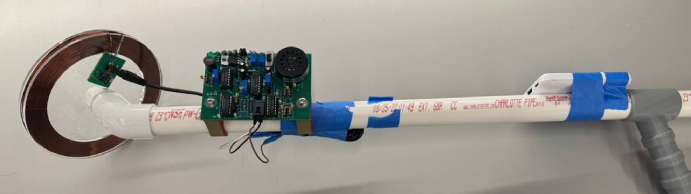
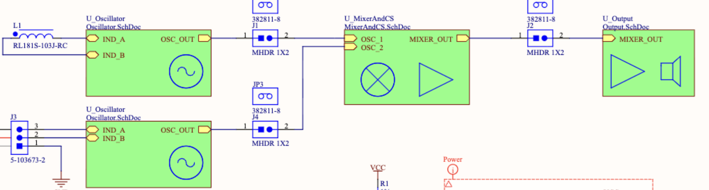
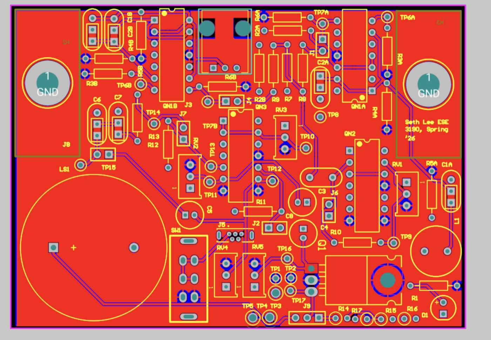
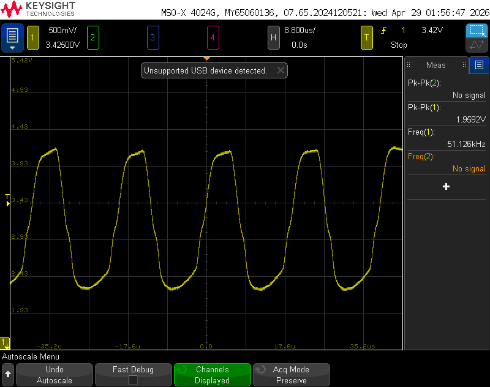
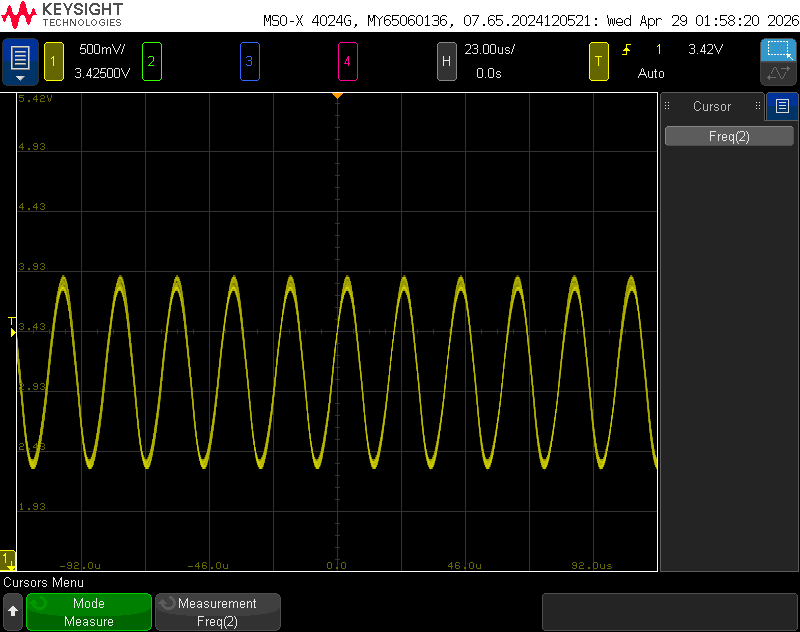
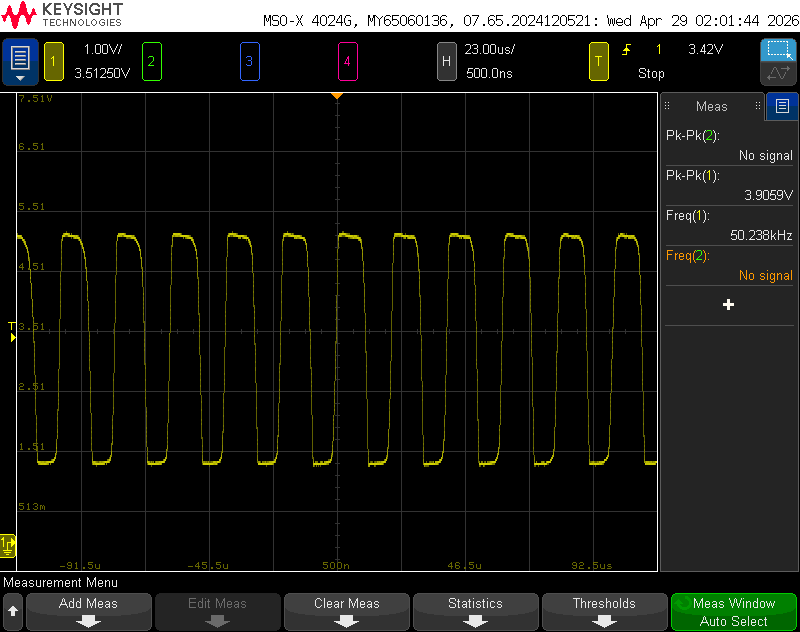
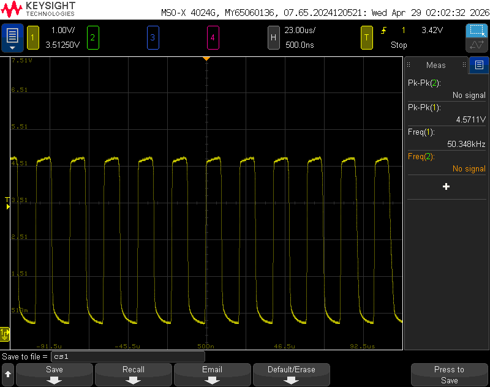
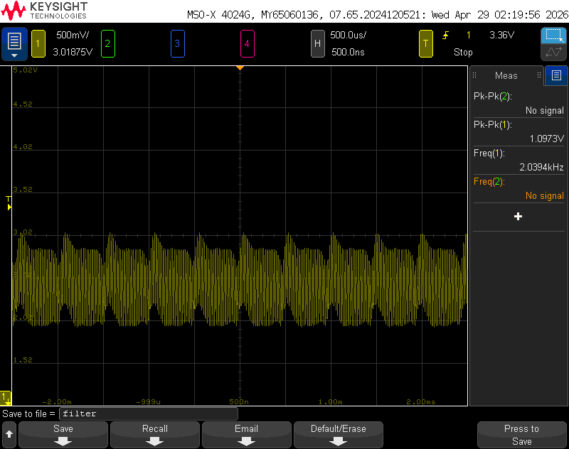
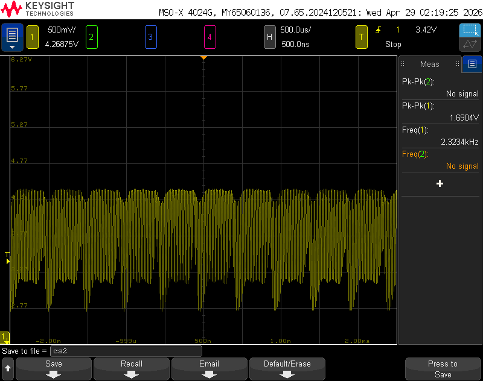
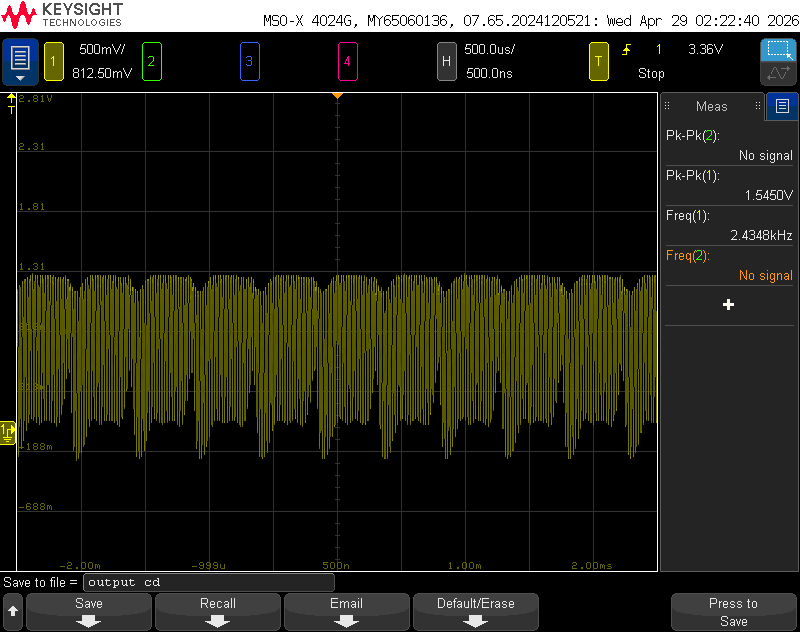

A metal detector built from discrete MOSFETs on a custom Altium PCB. It cascades stages of two LC oscillators, a mixer, a low pass filter, and a source follower that interfaces with the speaker.

How it works
The metal detector works by cascading stages of two LC oscillators, one custom and one fixed, along with a mixer to add the two signals. This mixer is followed by the 1st CS amplifier, which generates a differential signal due to the square law of current of a MOSFET. Then, the low pass filter filters out the higher frequency signals, leaving only the differential signal of the two LC oscillators, which are 50 kHz and 49 kHz, producing a 1 kHz differential signal. This is then boosted by a 2nd CS amplifier, which is fed into the source follower that interfaces with the low resistance speaker.
The way the metal detector actually detects metal is by inducing eddy currents in nearby metal, which in turn lowers the inductance of the custom inductor. Lowering the inductance raises the frequency that the custom LC oscillator passes, so the differential signal of around 1 to 2 kHz shrinks, producing a lower pitch sound.
I wound up the inductor coil until I achieved an inductance value between 5 mH and 10 mH, ending up with 5.36 mH. This range was chosen because anything above 10 mH would take too large of an inductor coil, while an inductor that is too small would require a very large capacitor to maintain a resonant frequency of 49 kHz, which would take up excess space on the PCB. A small inductor also generates a small magnetic field, so the eddy currents induced in the metal would be small as well, leading to only a small change in inductance and an insensitive metal detector. Using f = 1/(2π√LC), the custom capacitor came out to 1.96 nF for 49 kHz, and the fixed oscillator used a 10 mH inductor with 1.01 nF for 50 kHz.
The mixer uses a differential amplifier topology to add the two oscillator signals together. Since both inputs sit on the inverting input of the differential amplifier, the theoretical gain works out to −10 V/V. The first common-source amplifier then amplifies the result into a 2 kΩ load, and because the current of a MOSFET follows a square law, this stage is what generates the differential signal.
Assuming a perfect 1 kHz differential signal, I wanted a low pass filter capable of attenuating the higher 49 and 50 kHz frequencies while passing the 1 kHz differential frequency. Using f = 1/(2πRC) and the values available in the Detkin laboratory, I settled on a 10 kΩ resistor and a 2.2 nF capacitor, which gives a cutoff frequency of 7234 Hz. The 10 kΩ resistor was a good choice because this filter connects directly to the output of the mixer's CS amplifier, which has a load value of 2 kΩ. Choosing a resistance significantly larger than 2 kΩ prevents loading, where the gain drops because the total equivalent resistance to AC ground drops.
The primary purpose of the 2nd CS amplifier is to provide some extra gain, creating a larger sound for the metal detector. A 2.2 kΩ resistor was a good choice here since it is large enough to provide noticeable gain while not being so large that it pushes the transistor out of saturation. The signal then goes into a source follower. Attaching the low resistance speaker directly to a CS amplifier would not work, because the CS amplifier has a large output resistance looking into the MOSFET. If we think about the CS amplifier output as a Thévenin equivalent, the Thévenin resistance would be large, so the speaker would only get a small portion of the voltage drop. The source follower solves this since its output resistance is much lower, which gives the speaker a much better voltage transfer.
Design & hardware
The component values below came out of the resonant frequency and RC cutoff equations. As for biasing, I decided to bias most of the PMOS and NMOS at a gate voltage of 3 V for the sake of consistency, since 3 V is a good middle ground between 0 V (ground) and 5 V (VDD). This ensures that the gate to source voltage for both the PMOS and NMOS is large enough to pass current while remaining in saturation. Too small of a gate voltage would turn the NMOS off, and too large of a gate voltage would put it in triode. These voltages were tuned with the potentiometers and measured with a voltmeter.
| Parameter | Value | Why |
|---|---|---|
| Search coil | 5.36 mH | Wound by hand, large enough to induce eddy currents in nearby metal |
| Variable osc. cap | 1.96 nF | Resonates the coil at 49 kHz |
| Fixed osc. | 10 mH / 1.01 nF | Fixed reference frequency at 50 kHz |
| Low pass filter | 10 kΩ / 2.2 nF | 7234 Hz cutoff, large enough to avoid loading the 2 kΩ stage |
| 2nd CS amp load | 2.2 kΩ | Noticeable gain without pushing the transistor out of saturation |
| Gate bias | 3.0 V | A middle ground between ground and VDD that keeps the devices in saturation |
| Tail current bias | 1.141 V | Gate voltage of the NMOS current mirror that supplies the tail current |


Measured results
To measure the various stages of the metal detector, I first powered it on to ensure that its stages were on, since MOSFETs are active circuit elements. Then I used the red and black probes from the oscilloscope to measure each of the stages using the test points, with the red probe attached to the test point and the black probe to ground.







The measured gains of the mixer and the CS amplifiers are significantly lower than the theoretical values. This is because the theoretical gain does not account for the voltage rails of the MOSFETs or the MOSFETs potentially falling out of saturation due to the large swings. These large swings mean that the small signal model calculation of gain is no longer accurate. The common drain stage, on the other hand, matched its theoretical value closely.
| Stage | Theoretical | Measured |
|---|---|---|
| Mixer | −10 V/V | −1.98 V/V |
| 1st CS amp | −8.02 V/V | −1.17 V/V |
| 2nd CS amp | −8.90 V/V | −1.55 V/V |
| Source follower | 0.95 V/V | 0.917 V/V |
Discussion
Overall, the metal detector project was successful since the metal detector was able to detect all the objects on demo day. As the custom inductor was brought close to the metal objects, the pitch of the noise lowered. This makes sense because the variable inductor LC oscillator produces the lower frequency input at around 49 kHz. When the inductor's magnetic field induces eddy currents into the metal, the inductance value lowers, which in turn raises the frequency that this LC oscillator passes. This means that the differential signal of around 1 to 2 kHz shrinks, producing the lower pitch sound.
Although the experimental oscilloscope graphs are not perfect, they do show the metal detector working. The experimental results show more noise and non-idealities than the simulated results do. While the simulated results resemble something much closer to an actual sine wave, the experimental results show that the low pass filter struggled to filter out the high frequencies. To improve the signal further, the low pass filter could be fine tuned even more, and increasing the low pass filter capacitance would help since the capacitor is inversely proportional to the cutoff frequency. In reality, though, not all of the 49 and 50 kHz signals can be filtered out, since these are the primary signals with the largest amplitude that propagate through the stages.
Something else worth noting is that the fixed oscillator actually produced a 51.1 kHz wave and the variable oscillator produced a 49.1 kHz wave, which explains why the differential signal is roughly 2 kHz instead of 1 kHz. The reason these waves were not perfectly 50 kHz and 49 kHz is due to non-idealities in the circuit, specifically parasitic inductances and capacitances, which would alter the LC oscillator. Additionally, the capacitors and inductors have some tolerance compared to their actual values, adding to the error. Despite these non-idealities, the metal detector worked as expected and the filter still did its job by filtering out some of the higher frequency signals.